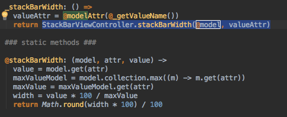
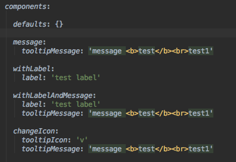

Testing Strategy
Vlad Mystetskyi, Nik Savchenko,
eXelate, A Nielsen Company
Test types
- Unit tests
- Component tests
- Integration tests
- E2E tests
- Sanity tests
Conventions, concepts, patterns
- File Co-location
- Reuse tests
- Test Data
- Page Object
File Co-location
- For code
(view, actions, reducers, controllers, models, collections, etc.)
- For test
(specs, po, test, data, fixtures, etc.)
Some links:
React dir structure,
Code organization
Co-location Unit tests
Reuse Tests
Example: Seed Selector Test
checkHeaders: (checkData) ->
test = this
describe "Check header-bar rendering:", ->
it 'should have correct selected seeds header', () ->
expect(test.moSeedsSelector.getBemEl('seeds'))
.toHaveText(checkData.seeds)
...
Tests for ... ?
- New Component
- New module/page/app
- Small additional functionality at component
- Additional functionality at current module
- Old component
- Old modules/pages/apps
_onRenderStateChanged: ->
@toggleSort(@state.get('isSort'), @state.get('isDesc'))
...
describe 'When call _onRenderStateChanged callback:', ->
it 'should call toggleSort with isSort and isDesc params form renderState', ->
spyOn(sortView, 'toggleSort')
sortView._onRenderStateChanged()
expect(sortView.toggleSort).toHaveBeenCalled()
...
Refactoring: step #1

we still have @model - it mean for test different variants of values - widths we need to create a lot of instances of out class with different params.
Refactoring: step #2

Now we can test static stackBarWidth function logic for different cases without creating instances of our class.
Unit tests is not only functions
What are we testing?
- Initialization (check state, type and value of main properties, sub-objects, classes, etc.)
- Rendering (check $el, template, classes, texts, values at html)
- Sub-view (tooltips, child views, etc)
- Actions (click, change state, change input, etc.)
Examples
Options and TestData IconTooltip Component

Tests for new functionality at current modules
You have to add some cool quote at the end...
No amount of testing can prove a software right, a single test can prove a software wrong.
Amir Ghahrai, Testing Excellence
.. and some links :)
Created with Shower